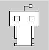

Objectives
On completion of this lab you should:
be familiar with the PDE (Processing Development Environment).
be able to use functions to draw basic shapes.
Lab advice
- Your labs are not a race to be the first student finished.
- It is very important that you:
- take your time.
- read the instructions carefully.
- ask your teacher to explain concepts that you don't understand.
- Where code is given in labs, don't cut and paste it; maximise your learning by typing the code in.
Opening the PDE (Processing Development Environment)
- Your teacher will demonstrate how to open the PDE.

Setting your Sketchbook location
- As you work through the exercises in this lab, you will create many new files. These files are called Sketchbooks.
- It is important that you pick a convenient location on your computer to save these sketchbook files to. The following steps show you how to do this.
Updating your Sketchbook location
- With the PDE open, select the Preferences menu item from the File menu.

- The following window should appear.

In the Sketchbook location, enter a location that is convenient to you.
Click the OK button.
The Sketchbook location
- All your work can now be accessed easily by selecting the Sketchbook option from the File menu. An example of previous Sketchbook work could look like this:

Drawing Simple Shapes
- We will use the rect() built-in function to draw rectangles and squares.
Drawing Rectangles
- The syntax of the rect function is:
rect(x, y, w, h)
x = x-coordinate of the upper left corner of the rectangle
y = y-coordinate of the upper left corner of the rectangle
w = width of the rectangle
h = height of the rectangle- Note that, in computing, the coordinates start in the top left hand corner i.e. (0,0) is in the top left of the screen. In the following picture, you can see the coordinates of the rectangle (1,2) along with its width (4) and height (3).

- Enter the following code in your sketchbook:
rect(20,30,50,30);- Run the code, by clicking on the play button (highlighted in red in the screen shot below):

- The following window should appear with a rectangle that:
- starts at the (x,y) coordinates (20,30) [measured in pixels]
- has a width of 50 pixels
- has a height of 30 pixels

Drawing Squares
Using the rect() function, you can draw squares. Just set the width and height to the same number of pixels.
Below the code you wrote previously, try drawing a square that has starts at the (x,y) coordinates of (40,5) and has a length of 20.
Run the code. Did a square appear?

Drawing Simple Shapes
- We will use the line() built-in function to draw lines.
Drawing Lines
- The syntax of the line function is:
line(x1, y1, x2, y2)
x1 = x-coordinate of first point
y1 = y-coordinate of first point
x2 = x-coordinate of second point
y2 = y-coordinate of second point- In the following picture, you can see an example of a line.

- Enter the following code in your open sketchbook:
line(5,30,20,90);- When you run the code, you should see the following line that starts at (5,30) and ends at (20,90):

Drawing Simple Shapes
- We will use the ellipse() built-in function to draw ovals and circles.
Drawing Ellipses
For our purposes here, we will define an ellipse as a basic oval shape.
The syntax of the ellipse function is:
ellipse(x, y, w, h)
x = x-coordinate at the centre of the ellipse
y = y-coordinate at the centre of the ellipse
w = width of the ellipse
h = height of the ellipse- In the following picture, you can see an example of an ellipse.

- Enter the following code in your open sketchbook:
ellipse(85,50,20,60);- When you run the code, you should see the following ellipse whose centre is (85,50) and is 20 pixels wide and 90 high.

Drawing Circles
Using the ellipse() function, you can draw circles. Just set the width and height to the same number of pixels.
Try drawing a cicle that has the coordinates (50,80) at its centre and has a diameter of 15 pixels.
Run the code. Did a circle appear?

Exercises
- The exercises are typically based on the functions we covered in the previous steps in this lab.
- For each exercise listed below, open a new sketchbook.
Exercise 1
- Draw the alien below:

Exercise 2
- Draw the rounded alien below. Note that the sequence of the function calls matter in this drawing...the Alien's body overlaps his arms and feet and his head overlaps his body:

Solutions
The solutions for this lab can be found here.
The file is in Zip format, so when you download it, you will need to unzip it. If you don't have unzipping software installed on your computer, 7Zip is a good choice.
Installing the PDE (Processing Development Environment)
- If you have your own computer at home, you can install the PDE on it
Downloading the PDE
- The PDE can be downloaded from https://processing.org/. It is free, but you can choose to make a donation if you wish.

- Choose the version that corresponds to your computer's operating system:

- A zip file will start to download. When this file has downloaded:
- Decide where you are going to store your Programming applications on your computer. It is a good idea to create a folder called dev on your C:\ and store all your applications in there.
- Unzip the downloaded processing file to your chosen location. Note: if you don’t have unzipping software, 7-zip is a good choice and can be downloaded from here: http://www.7-zip.org/.
- You should now have a folder structure resembling this picture: